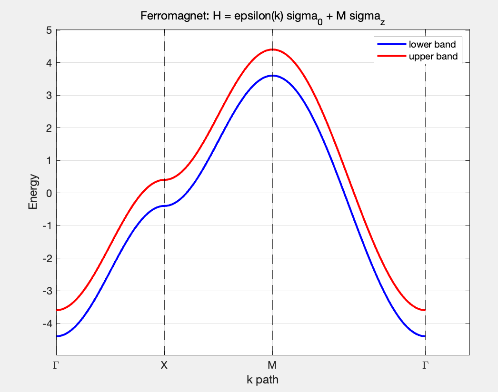
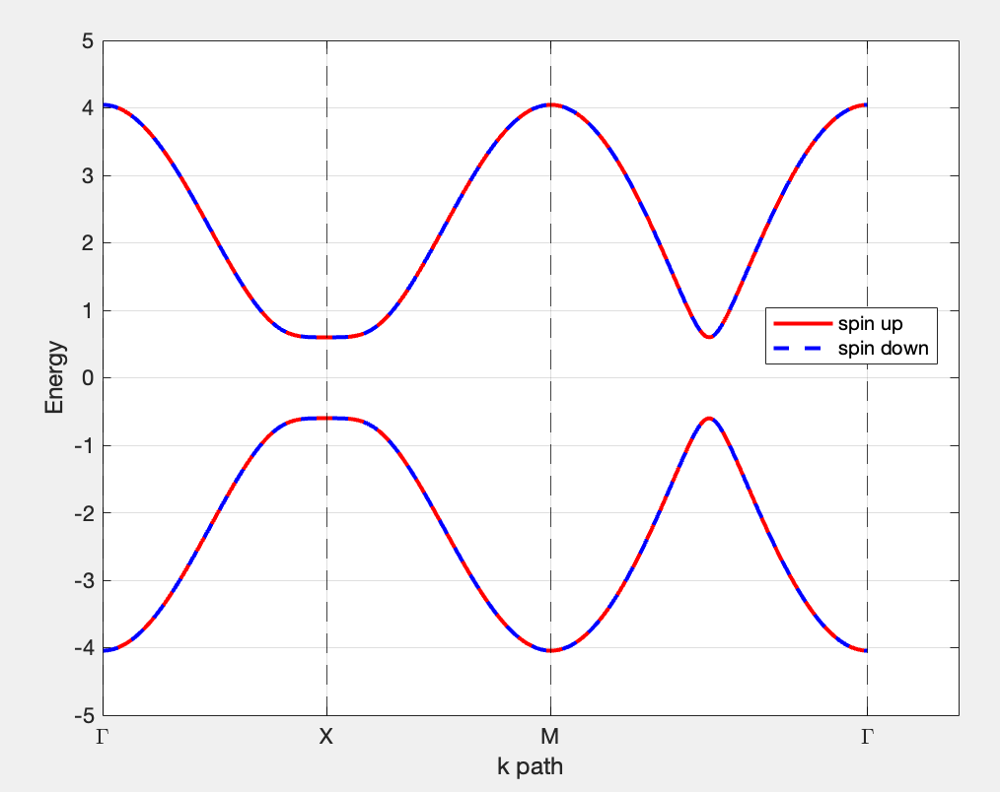
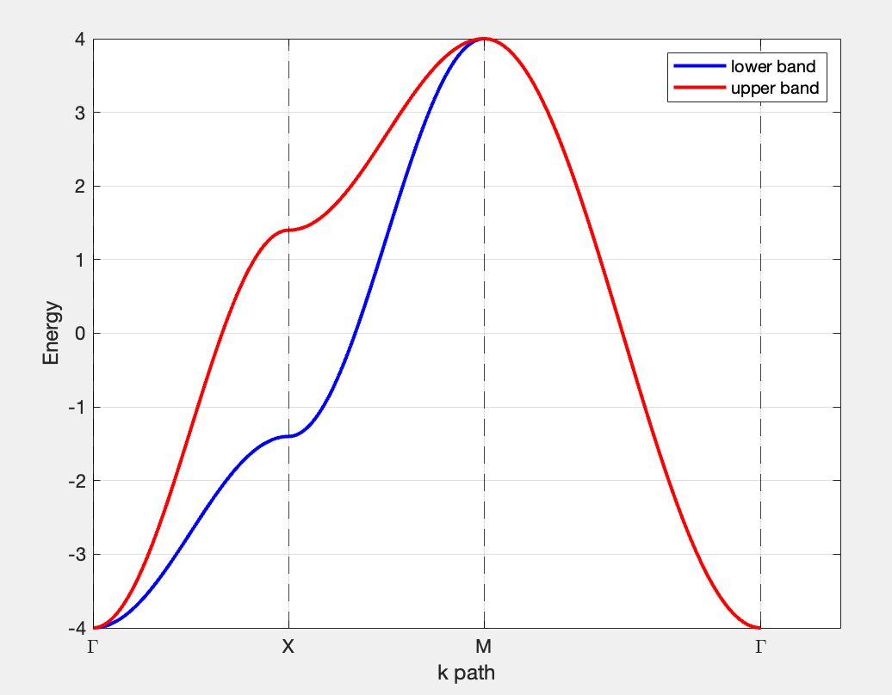
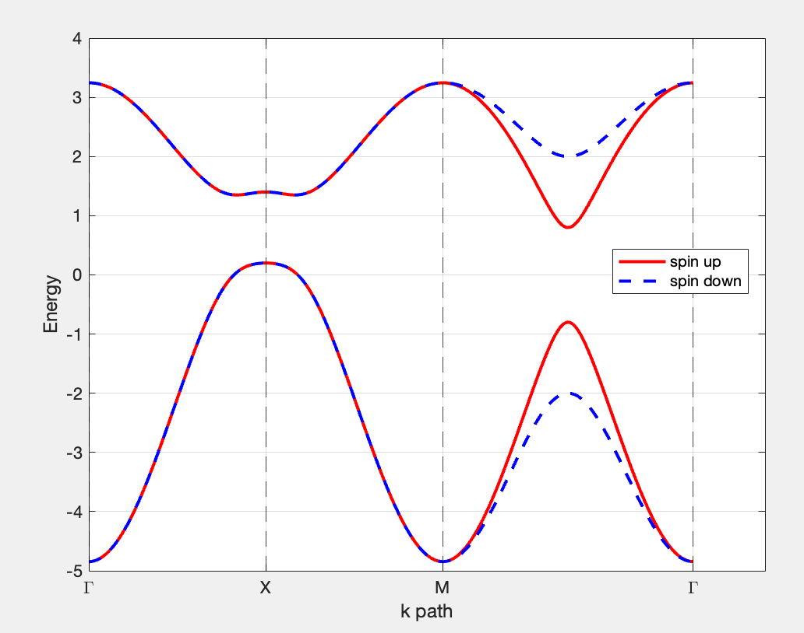

Altermagnetism I
Reference Materials
Selected Literature
| Purpose | Reference or resource | Notes |
|---|---|---|
| Review | Altermagnets as a new class of functional materials, Nature Reviews Materials 10, 473–485 (2025) [1] | Reviews experimental advances and materials applications |
| Spectroscopy | Symmetry, microscopy and spectroscopy signatures of altermagnetism, Nature 649, 837–847 (2026) [2] | Symmetry and spectroscopic signatures |
| Foundational work | PRX 12, 031042 (2022) [3]; PRX 12, 040501 (2022) [4] | Defines a third class of collinear magnetic order |
| TB models | Minimal models for altermagnetism, PRB 110, 144412 (2024) [5]; Field-sensitive dislocation bound states in two-dimensional d-wave altermagnets, PRB 110, 165141 (2024) [6] | Altermagnetism from a tight-binding perspective |
One-Sentence Definition
Like an antiferromagnet, an altermagnet has no net magnetic moment, yet like a ferromagnet it exhibits spin splitting at some \(\bm{k}\) points. The key distinction is that this is not a constant Zeeman splitting, but a symmetry-protected momentum-dependent splitting.
Ferromagnetism and Conventional Collinear Antiferromagnetism
Ferromagnetism
\[H_{\mathrm{FM}}(\bm{k})=\epsilon(\bm{k})\sigma_0+ M\sigma_z.\] Here \(M\) is a constant. The Pauli matrices are \[\sigma_0 = \begin{pmatrix} 1 & 0 \\ 0 & 1 \end{pmatrix}, \qquad \sigma_z = \begin{pmatrix} 1 & 0 \\ 0 & -1 \end{pmatrix}.\] The Hamiltonian in matrix form is \[H_{\mathrm{FM}}(\mathbf{k}) = \begin{pmatrix} \epsilon(\mathbf{k})+M & 0 \\ 0 & \epsilon(\mathbf{k})-M \end{pmatrix},\]
Uniform-Sign Zeeman Splitting
There are two spin bands, \[E_{\uparrow/\downarrow}(\bm{k})=\epsilon(\bm{k})\pm M\] so the spin splitting is \[\Delta E(\mathbf{k}) = E_\uparrow(\mathbf{k})-E_\downarrow(\mathbf{k}) = 2M.\] This \(\Delta E(\mathbf{k})=2M\) is independent of \(\mathbf{k}\). If \(M>0\), then at every \(\mathbf{k}\) point, \[E_\uparrow(\mathbf{k})>E_\downarrow(\mathbf{k}).\] Thus throughout the Brillouin zone the \(\downarrow\) band is lower and the \(\uparrow\) band is higher. This is uniform-sign splitting.
Net Magnetization
Because lower-energy states are more readily occupied, at a common Fermi level \(\mu\) the \(\downarrow\) states have a larger occupation than the \(\uparrow\) states, \[n_\downarrow > n_\uparrow.\] The total spin polarization is therefore nonzero, \[n_\uparrow-n_\downarrow \neq 0.\] corresponding to a net magnetization.
Ferromagnetism on a Square Lattice
Consider a ferromagnetic model on a two-dimensional square lattice. Its tight-binding Hamiltonian can be written as \[H_{\mathrm{FM}}(\bm{k}) = \left[-2t(\cos k_x+\cos k_y)-\mu\right]\sigma_0 + M\sigma_z,\] where \(t\) is the nearest-neighbor hopping and \(\mu\) is the chemical potential. In matrix form, \[H_{\mathrm{FM}}(\bm{k}) = \begin{pmatrix} -2t(\cos k_x+\cos k_y)-\mu+M & 0 \\ 0 & -2t(\cos k_x+\cos k_y)-\mu-M \end{pmatrix},\] and the two spin bands are \[E_\uparrow(\bm{k}) = -2t(\cos k_x+\cos k_y)-\mu+M, \quad E_\downarrow(\bm{k}) = -2t(\cos k_x+\cos k_y)-\mu-M.\] The ferromagnetic term \(M\sigma_z\) simply splits the initially spin-degenerate square-lattice band into upper and lower branches, with splitting \[E_\uparrow(\bm{k})-E_\downarrow(\bm{k})=2M,\] whose sign is uniform throughout the Brillouin zone and does not vary with \(\bm{k}\).

Conventional Collinear Antiferromagnetism
The key difference between a conventional collinear antiferromagnet and a ferromagnet is that the ferromagnetic exchange field has the same sign on every site, whereas the antiferromagnetic exchange field changes sign between the \(A/B\) sublattices.
The minimal ferromagnetic model is \[H_{\rm FM}(\bm{k})=\epsilon(\bm{k})\sigma_0+M\sigma_z,\] with magnetic term \[M\sigma_z.\] The same \(M\) applies to every site, so the spin bands split as \[E_{\uparrow/\downarrow}(\bm{k})=\epsilon(\bm{k})\pm M.\] A conventional collinear antiferromagnet has an additional sublattice degree of freedom: \(\tau\) denotes the \(A/B\) sublattices and \(\sigma\) denotes spin. The model can be written as \[H_{\rm AFM}(\bm{k}) = d_x(\bm{k})\tau_x + d_y(\bm{k})\tau_y + M\tau_z\sigma_z ,\] where \[\tau_x= \begin{pmatrix} 0&1\\ 1&0 \end{pmatrix}, \quad \tau_y= \begin{pmatrix} 0&-i\\ i&0 \end{pmatrix}, \quad \tau_z=\sigma_z= \begin{pmatrix} 1&0\\ 0&-1 \end{pmatrix}\] The magnetic term \(M\tau_z\sigma_z\) on sublattice \(A\) is \(+M\sigma_z\), while on sublattice \(B\) it is \(-M\sigma_z\). In the basis \[(A\uparrow,\ B\uparrow,\ A\downarrow,\ B\downarrow),\] the Hamiltonian is \[H_{\rm AFM}(\bm{k}) = \begin{pmatrix} M & f(\bm{k}) & 0 & 0\\ f^*(\bm{k}) & -M & 0 & 0\\ 0 & 0 & -M & f(\bm{k})\\ 0 & 0 & f^*(\bm{k}) & M \end{pmatrix},\] where \(f(\bm{k})\) is the hopping between the \(A/B\) sublattices, \[f(\bm{k})=d_x(\bm{k})-i d_y(\bm{k}),\qquad f^*(\bm{k})=d_x(\bm{k})+i d_y(\bm{k}).\]
Antiparallel Local Moments \(\&\) Spin Degeneracy
The Hamiltonian separates into two spin blocks, \[H_\uparrow(\bm{k})= \begin{pmatrix} M & f(\bm{k})\\ f^*(\bm{k}) & -M \end{pmatrix}, \quad H_\downarrow(\bm{k})= \begin{pmatrix} -M & f(\bm{k})\\ f^*(\bm{k}) & M \end{pmatrix},\] and their eigenvalues are identical: \[E_{\pm,\uparrow}(\bm{k})=E_{\pm,\downarrow}(\bm{k}) = \pm\sqrt{|f(\bm{k})|^2+M^2}.\] For \(\uparrow\) electrons, sublattice \(A\) has higher energy and sublattice \(B\) lower energy; the opposite holds for \(\downarrow\) electrons. The local moments therefore point up on \(A\) and down on \(B\). The moments are antiparallel in real space, while the bands remain spin-degenerate, protected by \(\mathcal{PT}\) symmetry.
Symmetry
An antiferromagnet breaks time-reversal symmetry \(\mathcal T\) by itself, but some combined symmetries can remain intact. Under \(\mathcal{PT}\), \(\mathcal T\) reverses spin and the magnetic moments, while \(\mathcal P\) exchanges the \(A/B\) sublattices. Together they map \(A\uparrow\) to \(B\downarrow\), restoring the original structure. The action of \(\mathcal{PT}\) on momentum is \[\mathcal T:\bm{k}\to-\bm{k}, \quad \mathcal P:\bm{k}\to-\bm{k},\] so \[\mathcal{PT}:\bm{k}\to\bm{k}.\] This symmetry can protect a twofold degeneracy at the same \(\bm{k}\) point.
Antiferromagnetism on a Square Lattice
Consider an antiferromagnetic model on a two-dimensional square lattice. The sites form two magnetic sublattices, \(A\) and \(B\), and nearest-neighbor hopping occurs only between the \(A\) and \(B\) sublattices. The real-space lattice is \[\begin{array}{ccccccc} B{\uparrow} & - & A{\downarrow} & - & B{\uparrow} & - & A{\downarrow} \\ | & & | & & | & & | \\ A{\downarrow} & - & B{\uparrow} & - & A{\downarrow} & - & B{\uparrow} \\ | & & | & & | & & | \\ B{\uparrow} & - & A{\downarrow} & - & B{\uparrow} & - & A{\downarrow} \end{array}\] Take a magnetic unit cell containing the two sites \[\mathbf r_A=(0,0),\qquad\mathbf r_B=(1,0)\] with primitive vectors \[\mathbf a_1=(1,1),\qquad\mathbf a_2=(1,-1)\] The four nearest neighbors of \(A_{\mathbf{R}}\) are \[B_{\mathbf{R}},\qquad B_{{\mathbf{R}}-\mathbf a_1},\qquad B_{{\mathbf{R}}-\mathbf a_2},\qquad B_{{\mathbf{R}}-\mathbf a_1-\mathbf a_2},\] while those of \(B_{\mathbf{R}}\) are \[A_{\mathbf{R}},\qquad A_{{\mathbf{R}}+\mathbf a_1},\qquad A_{{\mathbf{R}}+\mathbf a_2},\qquad A_{{\mathbf{R}}+\mathbf a_1+\mathbf a_2},\] so the real-space hopping term is \[H_t =-t\sum_{R,s}a^\dagger_{R s}\left(b_{R s}+b_{R-\mathbf a_1,s}+b_{R-\mathbf a_2,s}+b_{R-\mathbf a_1-\mathbf a_2,s}\right)+\text{H.c.}\] Fourier transforming with \[a_{R s}=\frac{1}{\sqrt N}\sum_k e^{i\mathbf k\cdot R}a_{k s},\qquad b_{R s}=\frac{1}{\sqrt N}\sum_k e^{i\mathbf k\cdot R}b_{k s}.\] gives In matrix form this is \[H_{\rm AFM}(\mathbf k) = H_{00}+H_{10}e^{-i\mathbf k\cdot\mathbf a_1} +H_{01}e^{-i\mathbf k\cdot\mathbf a_2}+H_{11}e^{-i\mathbf k\cdot(\mathbf a_1+\mathbf a_2)}+\text{H.c.},\] where \[H_{00} = \begin{pmatrix}M & -t & 0 & 0\\-t & -M & 0 & 0\\0 & 0 & -M & -t\\0 & 0 & -t & M\end{pmatrix},\] and the three intercell hopping matrices for \(B\rightarrow A\) are \[H_{10} = H_{01} = H_{11} = \begin{pmatrix}0 & -t & 0 & 0\\0 & 0 & 0 & 0\\0 & 0 & 0 & -t\\0 & 0 & 0 & 0\end{pmatrix},\] and, since it follows that \[-t\left[1+e^{-i\mathbf k\cdot\mathbf a_1}+e^{-i\mathbf k\cdot\mathbf a_2}+e^{-i\mathbf k\cdot(\mathbf a_1+\mathbf a_2)}\right] = -2t e^{-ik_x}(\cos k_x+\cos k_y).\] The phase \(e^{-ik_x}\) can be absorbed into the Bloch basis, so the tight-binding Hamiltonian becomes \[H_{\mathrm{AFM}}(\bm{k}) = \left[-2t(\cos k_x+\cos k_y)\right]\tau_x\sigma_0 + M\tau_z\sigma_z,\] where \(t\) is the nearest-neighbor hopping. In matrix form, \[H_{\rm AFM}(\bm{k}) = \begin{pmatrix} M & -2t(\cos k_x+\cos k_y) & 0 & 0\\ -2t(\cos k_x+\cos k_y) & -M & 0 & 0\\ 0 & 0 & -M & -2t(\cos k_x+\cos k_y)\\ 0 & 0 & -2t(\cos k_x+\cos k_y) & M \end{pmatrix}.\] The basis is \[(A\uparrow,\ B\uparrow,\ A\downarrow,\ B\downarrow).\] The Hamiltonian separates into two spin blocks, \[H_\uparrow(\bm{k}) = \begin{pmatrix} M & -2t(\cos k_x+\cos k_y)\\ -2t(\cos k_x+\cos k_y) & -M \end{pmatrix},\] \[H_\downarrow(\bm{k}) = \begin{pmatrix} -M & -2t(\cos k_x+\cos k_y)\\ -2t(\cos k_x+\cos k_y) & M \end{pmatrix}.\] Although these matrices have different forms, their eigenvalues are identical: \[E_\pm(\bm{k}) = \pm \sqrt{ 4t^2(\cos k_x+\cos k_y)^2+M^2 }.\] Thus, in a numerical band plot, the two solid red spin-up bands exactly overlap the two dashed blue spin-down bands. A conventional collinear antiferromagnet has antiparallel local moments in real space, yet without spin–orbit coupling its spin-up and spin-down bands remain degenerate at the same \(\bm{k}\) point.

Altermagnetism: A \(2 \times 2\) Effective Model
Altermagnetism on a Square Lattice
Consider a minimal momentum-space altermagnetic model on a two-dimensional square lattice. Its tight-binding Hamiltonian is \[H=\sum_{\bm{k}}\Psi_{\bm{k}}^{\dagger} H(\bm{k})\Psi_{\bm{k}},\] where \begin{equation} H(\bm{k})=\epsilon_0(\bm{k})\sigma_0+\Delta_{\mathrm{AM}}(\bm{k})\sigma_z, \quad \Psi_{\bm{k}}= \begin{pmatrix} c_{\bm{k}\uparrow}\\ c_{\bm{k}\downarrow} \end{pmatrix}. \label{eq:minimal_hk} \end{equation} with \begin{align} \epsilon_0(\bm{k})&=-2t(\cos k_x+\cos k_y)-\mu,\\ \Delta_{\mathrm{AM}}(\bm{k})&=2t_{\mathrm{AM}}(\cos k_x-\cos k_y). \label{eq:d_wave_delta} \end{align} Here \(t\) is the nearest-neighbor hopping, \(\mu\) is the chemical potential, and \(t_{\mathrm{AM}}\) controls the altermagnetic spin-splitting strength. This is a \(d\)-wave altermagnetic model.
The unit cell here contains only one site, so alternating local moments are not visible in real space. Instead, altermagnetism appears in momentum space: \(\Delta_{\mathrm{AM}}(\bm{k})\) has the \(d_{x^2-y^2}\) form, making the direction of spin splitting opposite in different regions of \(\bm{k}\) space and compensated over the full Brillouin zone.
Eigenvalues and Spin Splitting
Because the model contains no \(\sigma_x,\sigma_y\) terms, the spin \(z\) component is conserved. The eigenvalues are \[E_{\uparrow}(\bm{k})=\epsilon_0(\bm{k})+\Delta_{\mathrm{AM}}(\bm{k}),\qquad E_{\downarrow}(\bm{k})=\epsilon_0(\bm{k})-\Delta_{\mathrm{AM}}(\bm{k}).\] The splitting between the two spin bands is \[\Delta E(\bm{k})=E_{\uparrow}(\bm{k})-E_{\downarrow}(\bm{k}) =4t_{\mathrm{AM}}(\cos k_x-\cos k_y).\] Thus \(\Delta E(\bm{k})\) changes sign between different regions of the Brillouin zone, instead of having the same sign everywhere as in a ferromagnet.

Nodal Lines
When \[\cos k_x=\cos k_y\] the spin splitting vanishes along the two symmetry lines \(k_x=\pm k_y\), called nodal lines.
Why Is It \(d\) Wave?
Under a \(C_{4z}\) rotation, \[(k_x,k_y) \mapsto (-k_y,k_x),\] so \[\cos k_x-\cos k_y \mapsto \cos (- k_y) -\cos k_x =-(\cos k_x-\cos k_y).\] Hence \(\Delta_{\mathrm{AM}}(\bm{k})\) changes sign under a fourfold rotation. Combining a spin flip \(S\) with the crystal rotation \(C_{4z}\) leaves the system invariant: \[S H(C_{4z} \bm{k}) S^{-1} = H(\bm{k}).\]
Real-Space Hamiltonian
Using \[c_{\bm{k}\sigma}=\frac{1}{\sqrt{N}}\sum_{\bm{r}}e^{-\mathrm{i}\bm{k}\cdot\bm{r}}c_{\bm{r}\sigma},\qquad c_{\bm{r}\sigma}=\frac{1}{\sqrt{N}}\sum_{\bm{k}}e^{\mathrm{i}\bm{k}\cdot\bm{r}}c_{\bm{k}\sigma}.\] we have \[\sum_{\bm{r}}\left(c_{\bm{r}}^{\dagger} A c_{\bm{r}+\hat{x}}+\mathrm{h.c.}\right) \longleftrightarrow \sum_{\bm{k}}2\cos k_x\, c_{\bm{k}}^{\dagger}A c_{\bm{k}},\] where \(A\) may be a spin-space matrix. The real-space form corresponding to Eq. (1) is where \[c_{\bm{r}}= \begin{pmatrix} c_{\bm{r}\uparrow}\\ c_{\bm{r}\downarrow} \end{pmatrix}.\] Expanding Eq. (5) shows opposite hopping anisotropies for the two spin species: \begin{align} t^{\uparrow}_x&=-t+t_{\mathrm{AM}},\qquad t^{\uparrow}_y=-t-t_{\mathrm{AM}},\\ t^{\downarrow}_x&=-t-t_{\mathrm{AM}},\qquad t^{\downarrow}_y=-t+t_{\mathrm{AM}}. \end{align} Thus, when spin-up electrons favor the \(y\) direction, spin-down electrons favor the \(x\) direction. Rotating the crystal by \(90^\circ\) and then flipping the spin restores the system.
Note
This \(2\times2\) model is only an effective low-energy model retaining the spin degree of freedom. Real altermagnets generally contain two or more magnetic atoms and should be described with a multisublattice model [5].
Altermagnetism: A Real-Space Model
Origin of Altermagnetism
In real space, an altermagnet is compensated like an antiferromagnet, while in momentum space it exhibits spin splitting like a ferromagnet. Its distinction from a conventional collinear antiferromagnet lies in the spatial operation relating the antiparallel magnetic sublattices \(A/B\).
In a conventional collinear antiferromagnet, the \(A/B\) sublattices are often related by a simple translation or inversion. After a spin flip, applying that translation or inversion restores the system, so in \(\bm{k}\) space one commonly has \[E_{A\uparrow}(\bm{k})=E_{B\downarrow}(\bm{k}),\] implying spin degeneracy at the same \(\bm{k}\). In an altermagnet, the antiparallel \(A/B\) sublattices are instead related by a crystal operation such as a rotation, mirror, or glide. After the spin flip, the spatial operation maps \[\bm{k}\rightarrow g\bm{k},\] so only \[E_{A\uparrow}(\bm{k})=E_{B\downarrow}(g\bm{k}),\] is generally required, not \[E_{A\uparrow}(\bm{k})=E_{B\downarrow}(\bm{k}),\] This is the origin of spin-split altermagnetic bands.
Tight-Binding Model
Again use the basis \[(A\uparrow,\ B\uparrow,\ A\downarrow,\ B\downarrow).\] The magnetic term of a conventional antiferromagnet is \[M\tau_z\sigma_z,\] If only this term and ordinary \(A/B\) hopping are present, \(E_{A\downarrow}(\bm{k})\) and \(E_{B\uparrow}(\bm{k})\) are equivalent at the same \(\bm{k}\), so the bands remain spin-degenerate.
In an altermagnet, however, the crystal environments of the \(A/B\) sublattices are related by a rotation or mirror rather than a simple translation. This permits the term \[\eta(\bm{k})\tau_z.\] Consider the model \[H_{\rm AM}(\bm{k})= d_x(\bm{k})\tau_x +d_y(\bm{k})\tau_y +\eta(\bm{k})\tau_z +M\tau_z\sigma_z .\] The term \(M\tau_z\sigma_z\) describes antiparallel moments on the \(A/B\) sublattices, while \(\eta(\bm{k})\tau_z\) on sublattice \(A\) adds \(\eta(\bm{k})\), and on sublattice \(B\) subtracts \(\eta(\bm{k})\). Expanded as a \(4\times4\) matrix, \[H_{\rm AM}(\bm{k}) = \begin{pmatrix} \eta(\bm{k})+M & f(\bm{k}) & 0 & 0\\ f^*(\bm{k}) & -\eta(\bm{k})-M & 0 & 0\\ 0 & 0 & \eta(\bm{k})-M & f(\bm{k})\\ 0 & 0 & f^*(\bm{k}) & -\eta(\bm{k})+M \end{pmatrix}.\] It can also be written in spin-block form as \[H_{\rm AM}(\bm{k}) = \begin{pmatrix} H_\uparrow(\bm{k}) & 0\\ 0 & H_\downarrow(\bm{k}) \end{pmatrix},\] where \[H_\uparrow(\bm{k}) = \begin{pmatrix} \eta(\bm{k})+M & f(\bm{k})\\ f^*(\bm{k}) & -\eta(\bm{k})-M \end{pmatrix}, \qquad H_\downarrow(\bm{k}) = \begin{pmatrix} \eta(\bm{k})-M & f(\bm{k})\\ f^*(\bm{k}) & -\eta(\bm{k})+M \end{pmatrix}.\] Its eigenvalues are \[E_{\pm,s}(\mathbf k)= \pm\sqrt{|f(\mathbf k)|^2+\bigl[\eta(\mathbf k)+sM\bigr]^2}.\] Spin up corresponds to \(s=+1\) and spin down to \(s=-1\). The spin splitting within a given band is therefore \[\Delta_\pm(\mathbf k) = E_{\pm,\uparrow}-E_{\pm,\downarrow} = \pm\left[\sqrt{|f|^2+(\eta+M)^2} - \sqrt{|f|^2+(\eta-M)^2}\right].\] There is no spin splitting when \(M=0\); when \(\eta(\mathbf k)=0\), the model returns to the spin degeneracy of a conventional collinear antiferromagnet.
\(\eta(\mathbf k)\) Is Not Arbitrary
The form of \(\eta(\mathbf k)\) is constrained: it must change sign under a crystal symmetry operation \(g\), \[\eta(g\mathbf k)=-\eta(\mathbf k).\] One possible choice is \[\eta(\mathbf k)=\cos k_x-\cos k_y.\]
Altermagnetism on a Square Lattice
Consider the same two-dimensional square-lattice magnetic unit cell as for the antiferromagnet. It contains two magnetic sublattices, \(A\) and \(B\), with antiparallel local moments. Choose \[\mathbf r_A=(0,0),\qquad \mathbf r_B=(1,0),\] and magnetic Bravais vectors \[\mathbf a_1=(1,1),\qquad \mathbf a_2=(1,-1).\] The real-space lattice is \[\begin{array}{ccccccc} B{\uparrow} & - & A{\downarrow} & - & B{\uparrow} & - & A{\downarrow} \\ | & & | & & | & & | \\ A{\downarrow} & - & B{\uparrow} & - & A{\downarrow} & - & B{\uparrow} \\ | & & | & & | & & | \\ B{\uparrow} & - & A{\downarrow} & - & B{\uparrow} & - & A{\downarrow} \end{array} .\] As in the conventional antiferromagnet, nearest-neighbor hopping occurs only between the \(A\) and \(B\) sublattices. The four nearest neighbors of \(A_R\), all on the \(B\) sublattice, are \[B_R,\qquad B_{R-\mathbf a_1},\qquad B_{R-\mathbf a_2},\qquad B_{R-\mathbf a_1-\mathbf a_2}.\] Therefore, \[H_{AB} = -t_{AB}\sum_{R,s} a^\dagger_{R s} \left( b_{R s} + b_{R-\mathbf a_1,s} + b_{R-\mathbf a_2,s} + b_{R-\mathbf a_1-\mathbf a_2,s} \right) +\mathrm{H.c.}\] Fourier transforming, \[a_{R s} = \frac{1}{\sqrt N}\sum_{\bm{k}} e^{i\bm{k}\cdot R}a_{\bm{k}s}, \qquad b_{R s} = \frac{1}{\sqrt N}\sum_{\bm{k}} e^{i\bm{k}\cdot R}b_{\bm{k}s},\] gives \[f(\bm{k}) = -t_{AB} \left[ 1 + e^{-i\bm{k}\cdot\mathbf a_1} + e^{-i\bm{k}\cdot\mathbf a_2} + e^{-i\bm{k}\cdot(\mathbf a_1+\mathbf a_2)} \right].\] Since \[\bm{k}\cdot\mathbf a_1=k_x+k_y,\qquad \bm{k}\cdot\mathbf a_2=k_x-k_y,\] it follows that \begin{align*} f(\bm{k}) &= -t_{AB} \left[ 1 + e^{-i(k_x+k_y)} + e^{-i(k_x-k_y)} + e^{-i2k_x} \right] \\ &= -2t_{AB}e^{-ik_x}(\cos k_x+\cos k_y). \end{align*} The overall phase \(e^{-ik_x}\) can be absorbed into the Bloch basis, so in a suitable gauge \[f(\bm{k}) = -2t_{AB}(\cos k_x+\cos k_y).\] Everything up to this point is the same as for the antiferromagnet.
The essential additional ingredient for an altermagnet is a sublattice-dependent \(d\)-wave hopping term. In the present magnetic unit cell, nearest-neighbor hopping within a given magnetic sublattice lies along \(\mathbf a_1\) and \(\mathbf a_2\). Choose opposite hopping signs along the two directions on sublattice \(A\), with the reversed pattern on sublattice \(B\): \[\begin{array}{c|cc} \text{子格} & \mathbf a_1\text{方向 hopping} & \mathbf a_2\text{方向 hopping}\\ \hline A & +t_\eta & -t_\eta\\ B & -t_\eta & +t_\eta \end{array}\] The real-space altermagnetic term can then be written as After Fourier transformation, \[H_\eta(\bm{k}) = \eta(\bm{k})\tau_z\sigma_0,\] where \[\eta(\bm{k}) = 2t_\eta \left[ \cos(\bm{k}\cdot\mathbf a_1) - \cos(\bm{k}\cdot\mathbf a_2) \right].\] Substituting \(\mathbf a_1=(1,1)\) and \(\mathbf a_2=(1,-1)\) gives \begin{align*} \eta(\bm{k}) &= 2t_\eta \left[ \cos(k_x+k_y) - \cos(k_x-k_y) \right] \\ &= -4t_\eta\sin k_x\sin k_y. \end{align*}
The two-sublattice square-lattice altermagnetic model is therefore \[H_{\rm AM}(\bm{k}) = \epsilon_0(\bm{k})\tau_0\sigma_0 + \operatorname{Re}f(\bm{k})\tau_x\sigma_0 - \operatorname{Im}f(\bm{k})\tau_y\sigma_0 + \eta(\bm{k})\tau_z\sigma_0 + M\tau_z\sigma_z.\] Here \(\tau_i\) acts in the \(A/B\) sublattice space and \(\sigma_i\) acts in spin space. \[\epsilon_0(\bm{k}) = -2t_0 \left[ \cos(\bm{k}\cdot\mathbf a_1) + \cos(\bm{k}\cdot\mathbf a_2) \right] -\mu,\] or equivalently \[\epsilon_0(\bm{k}) = -4t_0\cos k_x\cos k_y-\mu.\] The Hamiltonian matrix is It separates into two spin blocks, \[H_\uparrow(\bm{k}) = \begin{pmatrix} \epsilon_0+\eta+M & f(\bm{k})\\ f^*(\bm{k}) & \epsilon_0-\eta-M \end{pmatrix} = \epsilon_0(\bm{k})\tau_0 + \operatorname{Re}f(\bm{k})\tau_x - \operatorname{Im}f(\bm{k})\tau_y + [\eta(\bm{k})+M]\tau_z.\] and \[H_\downarrow(\bm{k}) = \begin{pmatrix} \epsilon_0+\eta-M & f(\bm{k})\\ f^*(\bm{k}) & \epsilon_0-\eta+M \end{pmatrix} = \epsilon_0(\bm{k})\tau_0 + \operatorname{Re}f(\bm{k})\tau_x - \operatorname{Im}f(\bm{k})\tau_y + [\eta(\bm{k})-M]\tau_z.\] The bands are therefore \[E_{\uparrow,\pm}(\bm{k}) = \epsilon_0(\bm{k}) \pm \sqrt{ |f(\bm{k})|^2+ [\eta(\bm{k})+M]^2 },\] \[E_{\downarrow,\pm}(\bm{k}) = \epsilon_0(\bm{k}) \pm \sqrt{ |f(\bm{k})|^2+ [\eta(\bm{k})-M]^2 }.\] If only the conventional antiferromagnetic exchange field is present, \[\eta(\bm{k})=0,\] then \[E_{\uparrow,\pm}(\bm{k}) = E_{\downarrow,\pm}(\bm{k}) = \epsilon_0(\bm{k}) \pm \sqrt{|f(\bm{k})|^2+M^2}.\] The spin-up and spin-down bands are then still degenerate at the same \(\bm{k}\) point.

Extensions of the Model
Adding Rashba Spin–Orbit Coupling or a Zeeman Term
In their study of topological defect states in two-dimensional \(d\)-wave altermagnets, Zhu et al. [6] used the Hamiltonian \begin{equation} H(\mathbf k) = -2t(\cos k_x+\cos k_y)\sigma_0 +2\lambda_R(\sin k_y\sigma_x-\sin k_x\sigma_y) +[2t_{\mathrm{AM}}(\cos k_x-\cos k_y)+M_z]\sigma_z \end{equation} which in matrix form is Here \(M_z\) is an additional Zeeman or exchange field that splits the nodal lines of the pure altermagnet. When \(\lambda_R = 0\), the spin splitting becomes \[\Delta E(\bm{k})=2[M_z+2t_{\mathrm{AM}}(\cos k_x-\cos k_y)].\] For large \(|M_z|\), the same sign can dominate the splitting throughout the Brillouin zone, making the physics closer to that of a ferromagnet or a state with net magnetization.
Replacing the Form Factor by \(g\) Wave or \(i\) Wave
\(\Delta_{\mathrm{AM}}(\bm{k})\) may be replaced by \[\Delta_g(\bm{k})\propto \sin k_x\sin k_y(\cos k_x-\cos k_y)\] to describe a \(g\)-wave angular structure. The central principle is unchanged: \(\Delta(\bm{k})\) must transform according to a nontrivial representation so that the spin splitting alternates in sign across momentum space.
Summary
The minimal altermagnetic model is \[H(\bm{k})=\epsilon_0(\bm{k})\sigma_0+\Delta(\bm{k})\sigma_z,\qquad \Delta(\bm{k})\ \text{在晶体对称操作下交替变号}.\] If \(\Delta(\bm{k})\) is constant, it describes ferromagnetic Zeeman splitting. If \(\Delta(\bm{k})\) alternates in sign across momentum space because of a combined symmetry while the real-space moments remain compensated, it describes altermagnetism. On a square lattice, \[\Delta(\bm{k})=2t_{\mathrm{AM}}(\cos k_x-\cos k_y)\] is the most accessible introductory \(d\)-wave example.
References
[1] Cheng Song et al., Altermagnets as a new class of functional materials, Nature Reviews Materials 10, 473–485 (2025). doi:10.1038/s41578-025-00779-1.
[2] Tomas Jungwirth et al., Symmetry, microscopy and spectroscopy signatures of altermagnetism, Nature 649, 837–847 (2026). doi:10.1038/s41586-025-09883-2.
[3] Libor Šmejkal, Jairo Sinova, and Tomas Jungwirth, Beyond conventional ferromagnetism and antiferromagnetism: a phase with nonrelativistic spin and crystal rotation symmetry, Physical Review X 12, 031042 (2022). doi:10.1103/PhysRevX.12.031042.
[4] Libor Šmejkal, Jairo Sinova, and Tomas Jungwirth, Emerging research landscape of altermagnetism, Physical Review X 12, 040501 (2022). doi:10.1103/PhysRevX.12.040501.
[5] Mercè Roig, Andreas Kreisel, Yue Yu, Brian M. Andersen, and Daniel F. Agterberg, Minimal models for altermagnetism, Physical Review B 110, 144412 (2024). doi:10.1103/PhysRevB.110.144412;
[6] Di Zhu, Dongling Liu, Zheng-Yang Zhuang, Zhigang Wu, and Zhongbo Yan, Field-sensitive dislocation bound states in two-dimensional \(d\)-wave altermagnets, Physical Review B 110, 165141 (2024). doi:10.1103/PhysRevB.110.165141;
[7] Igor I. Mazin, Notes on altermagnetism and superconductivity, AAPPS Bulletin 35, 18 (2025). doi:10.1007/s43673-025-00158-6; arXiv:2203.05000.
[8] Makoto Naka, Yukitoshi Motome, and Hitoshi Seo, Altermagnetic perovskites, npj Spintronics 3, 1 (2025). doi:10.1038/s44306-024-00066-9.